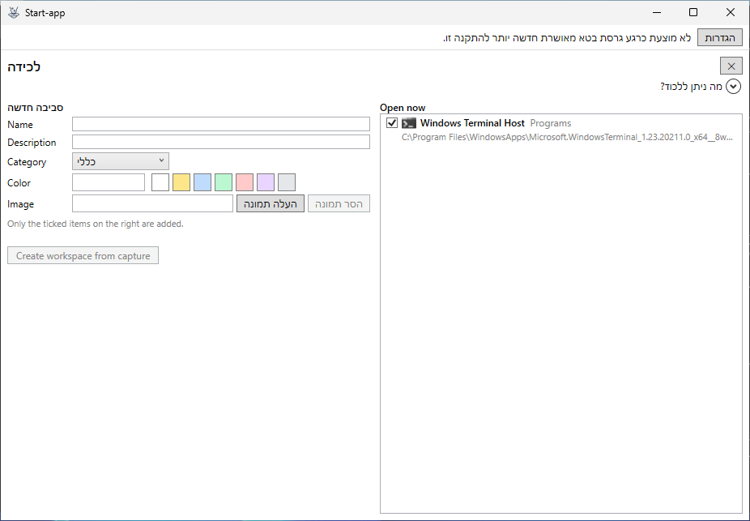

用户指南
指导 Start-app
在 0.1.0-proto.2 版本中逐步操作：创建工作区、添加项目、捕获、启动和保存——附有应用的真实截图和值得了解的限制。
评估原型，不是稳定版本
指南版本： 0.1.0-proto.2
没有找到剧集。尝试其他单词或清除搜索。
这是什么 Start-app
Start-app 将程序、文件夹、文件和链接保存在一个环境名称下。下次打开计算机时，“运行”命令会一起打开所有项目，而无需再次选择每一项。
本指南描述 0.1.0-proto.2 版本，并涵盖整个流程：主屏幕、创建工作区、手动或通过捕获添加项目、编辑、启动和保存。章节 已知的限制 将应用程序不执行的所有操作集中在一处。
系统和安装要求
打包目标是Windows x64。没有经过验证的 Mac 或 Linux 版本。
本指南描述的版本 0.1.0-proto.2 的下载位于 在首页的版本列表中，附有版本号、文件大小及其 sha256，供安装前核对。下载仅在该处进行，不在指南页面。
下载后激活
下载的是 ZIP 文件，而不是安装程序。下载后：
- 将 ZIP 中的所有文件解压到一个文件夹中。
- 运行
Start-app.exe位于主文件夹中。 - 请将文件夹
App保留在文件旁边，并始终整体移动整个文件夹。
该应用程序包含其运行时环境，因此无需单独安装.NET。无需注册、帐户或登录。数据保存到本地文件中%LOCALAPPDATA%\StartApp\store.json.
测试内容：此原型是作为独立的 Windows x64 应用程序构建的，并在托管的 Windows Server 2025 服务器上成功启动和关闭。未在家用 Windows 11 上进行独立测试，并且没有最低 Windows 版本承诺。不保证不会出现安全警告或防病毒软件警报。
版本更新
更新检查在应用的设置屏幕中进行，仅提供已批准的版本。从官方网站下载并手动安装：没有自动更新。

主屏幕：环境视图
屏幕顶部是环境列表。每张环境卡片显示名称、描述、类别、所选的卡片颜色和图片、创建时间以及上次打开时间。上次打开时间在启动环境时更新，而不是在打开单个项目时更新。
每张卡片旁边都有"启动"按钮。右键点击卡片或按键盘上的 Shift+F10 会打开操作菜单：显示、启动、添加项目、设计卡片和编辑类别。列表下方是创建新工作区的表单，角落里有进入捕获屏幕的入口。


创造新的工作环境
在创建表单中，名称为必填项。默认类别为"常规"，可以选择颜色和卡片图片。描述为选填项。
手动添加项目
在环境详细信息屏幕中，添加四种类型的项目：站点、文件、文件夹和软件。每个项目都可以指定您自己的名称和描述。本地路径需要完整的 Windows 路径，而不是简短的软件别名。
项目在屏幕上按类型分组：网站、文件夹、文件和程序。每行旁边都有"编辑"按钮。

"选择现有工作区"按钮可将已保存在其他工作区中的项目添加到当前工作区：选择类型、搜索并选取。

捕捉：扫描、选择和复制
捕获扫描当前打开的内容：程序和 Windows 文件资源管理器，以及浏览器中的地址栏。浏览器来源有Chrome、Edge和Brave；目前还没有针对每个浏览器和版本的完整兼容性矩阵。扫描最多可能需要 10 秒。
从捕获创建新工作区时，找到的项目默认被勾选，只有勾选的项目才会添加到工作区。

添加到现有工作区时，新增内容与已保存项目并排显示，标记为 Added, not saved yet。在点击"保存"之前不会保存任何内容。

拖动已在工作区中的单个项目时，会针对此次拖动显示单独的确认：是否将其作为单独副本再次添加？在批量添加（"全部添加"或"添加所选"）中，仅添加所选项目；如果未选择任何项目，则添加全部。非重复项目会立即添加到屏幕，所有重复项会收集到一个分组选择窗口中，由您勾选要添加的项目。
没有完全的重复防护：同一项目可以添加多次，即使它已保存在工作区中。建议在保存前检查列表。
编辑环境和项目
工作区卡片的右键菜单提供：显示、启动、添加项目、设计卡片和编辑类别。
在卡片设计中可以选择颜色和背景图片。
点击项目旁边的"编辑"会打开行内编辑器，包含名称、描述和地址。"取消"关闭编辑器且不保存更改。

更改仅在明确保存后才会保存；详见章节 保存和本地存储.
开通前启动环境及测试
"启动"命令首先打开选择窗口"在工作区中打开什么？"：所有项目默认勾选，可以取消勾选不想打开的项目。"取消"关闭窗口且不打开任何内容。

如果检查明确识别出某个项目已打开，会出现重新打开的选项：这些项目默认不勾选。仅勾选要再次打开的项目；可以返回选择或取消。检测不确定并不能证明项目已关闭。打开结果区分已发送请求、跳过、失败和选择不重新打开。已发送请求并不确认窗口已打开。
链接仅通过 http/https 打开，程序需要完整路径。
确认后，应用会向 Windows 发送打开每个项目的请求。已发送请求并不能证明目标窗口确实已打开。在保存路径中未找到的项目会被跳过，并说明未在保存路径中找到该项目，建议检查路径后重试。"已打开"检查是部分性的：只有被明确识别为已打开的项目才会作为重新打开的选项提供；当检查无法确定时，重新打开可能会产生重复项。
已知的限制
- 软件无法自动识别打开的文档；打开的软件并不是在其中打开特定文件的证据。文档是手动添加的。
- 不保证恢复未保存的内容或窗口放置。
- "已打开"检查是部分性的：确认检测到时会提供重新打开选项；无法确定时，重新打开可能会产生重复项。
- 部分捕获结果或空列表并不意味着没有任何打开的内容。
- 已保存项目与新项目之间没有完全的重复防护。
- 界面中无环境删除操作；您可以从环境中删除项目，但不能删除整个环境。
- 没有自动更新；可在设置屏幕中检查已批准的版本，并从官方网站手动安装。
- 不支持将驱动器根目录或网络共享根目录路径作为文件夹目标，无论是手动添加还是捕获；常规子文件夹路径受支持。
保存和本地存储
在当前项目设计中，工作区保存在计算机上的本地文件中： %LOCALAPPDATA%\StartApp\store.json. 只有明确点击"保存"时更改才会被保存。
简而言之，隐私
在当前设计中，环境数据保存在本地计算机上。打开链接或软件会创建该目的地的常规通信 - 例如，在浏览器中打开一个网站会导致该网站。
本网站本身不包括表单、分析、远程字体或第三方服务。
常见问题
什么 Start-app 正在做？
将程序、文件夹、文件和链接保存在一个环境名称下，并通过“运行”命令将它们全部打开。
所有打开的东西都会恢复原样吗？
不保证。无法自动捕获程序中打开的文档、恢复未保存的内容或承诺窗口放置。打开是向操作系统发出请求，并进行初步检查和报告。
如何添加在软件中打开的文档？
手动：将文件本身添加为环境详细信息中的文件类型项。捕获无法从开放软件中自行识别它。
信息存储在哪里？
在计算机上的本地文件中。详细内容见章节 保存和本地存储.